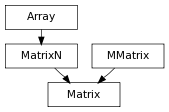

A 4x4 transformation matrix based on api Matrix
>>> from pymel.all import *
>>> import pymel.core.datatypes as dt
>>>
>>> i = dt.Matrix()
>>> print i.formated()
[[1.0, 0.0, 0.0, 0.0],
[0.0, 1.0, 0.0, 0.0],
[0.0, 0.0, 1.0, 0.0],
[0.0, 0.0, 0.0, 1.0]]
>>> v = dt.Matrix(1, 2, 3)
>>> print v.formated()
[[1.0, 2.0, 3.0, 0.0],
[1.0, 2.0, 3.0, 0.0],
[1.0, 2.0, 3.0, 0.0],
[1.0, 2.0, 3.0, 0.0]]
Returns the adjoint (adjugate) Matrix
alias of MMatrix
The matrix representation for this Matrix/TransformationMatrix/Quaternion/EulerRotation instance
Returns a 0.0-1.0 scalar weight blend between self and other Matrix, blend mixes Matrix as transformation matrices
The Matrix/FloatMatrix/TransformationMatrix/Quaternion/EulerRotation data
Returns the determinant of this Matrix instance
Returns the determinant of the upper left 3x3 submatrix of this Matrix instance, it’s the same as doing det(m[0:3, 0:3])
Returns the 4x4 determinant of this Matrix instance
Wrap the Matrix api get method
Returns a homogenized version of the Matrix
Returns the inverse Matrix
Returns true if both arguments considered as Matrix are equal within the specified tolerance
Returns True if the given Matrix is singular
The Matrix representation for this Matrix/TransformationMatrix/Quaternion/EulerRotation instance
The rotation expressed in this Matrix, in transform space
The scale expressed in this Matrix, in transform space
m.setToIdentity() <==> m = a * b Sets MatrixN to the identity matrix
m.setToProduct(a, b) <==> m = a * b Sets MatrixN to the result of the product of MatrixN a and MatrixN b
The translation expressed in this Matrix, in transform space
Returns the transposed Matrix
Returns a 0.0-1.0 scalar weighted blend between identity and self